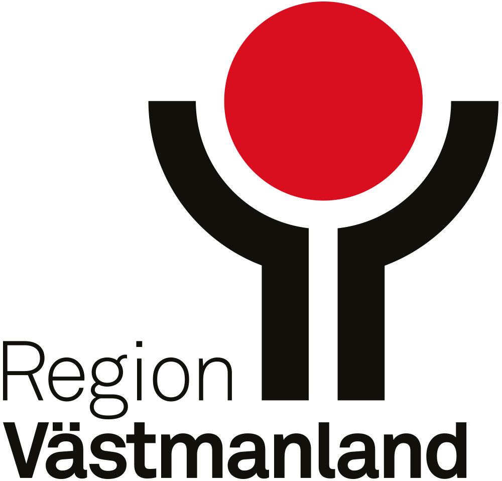

| Ortsklass | 2013 | 2023 |
|---|---|---|
| Storregional nodstad | 1 | 1 |
| Centralort | 9 | 9 |
| Arbetsort | 6 | 5 |
| Serviceort | 4 | 6 |
| Bostadsort med viss service | 0 | 5 |
| Bostadsort | 20 | 18 |
| Småort | 45 | 65 |
| Utanför tätort | 10 | 10 |
| Totalsumma | 95 | 119 |

Ortstruktur
Ortstruktur
Inledning
Västmanlands län har ett strategiskt och centralt läge i Sverige och består av tio centralorter, 34 tätorter, 62 småorter samt övrig landsbygd. Antalet orter har under åren utvecklats och kan förändras av faktorer som till exempel befolkningsförändringar eller ekonomisk tillväxt. Orterna ligger relativt utspridda inom länets kommuner och har olika storlek, funktioner och karaktär. Vissa orter domineras av olika samhällsfunktioner som arbetstillfällen och service medan andra karakteriseras som boendeorter. Utöver orternas storlek, funktioner och karaktär påverkar även det geografiska läget och nivån av utbytet mellan orterna i länet. Orterna binds samman genom transportinfrastruktur som i sin tur skapar förutsättningar till utbyte mellan orterna. Mellan vissa orter är utbytet mindre, vilket kan bero på orternas relativa storlek eller avstånd. Generellt har större orter fler funktioner än mindre orter där de mindre orterna och övrig landsbygd är beroende av dessa angående arbete och service. Alla orter har olika utmaningar och förutsättningar för att utvecklas och orternas beroende av varandra kan skiljas åt. Med denna anledning finns ett motiv till att få en gemensam bild av ortstrukturen i Västmanland (Region Västmanland 2025).
Ortstrukturen handlar om förhållandet mellan orter och anges dels av storlek och vilka funktioner orterna har samt läget i relation till varandra men även utbytet mellam dem. I ortstrukturen delas orterna in i olika ortstyper baserat på deras funktioner och roller i den regionala geografin. Ortstrukturen är en kombination mellan befolkningens fördelning mellan orterna, geografiska läge och storlek. Orterna har delats in i åtta nivåer: Storregional nodstad, Centralort, Arbetsort, Serviceort, Bostadsort med viss service, Bostadsort, Småort och Utanför tätort.
Metod
Genom att studera orternas roller och funktioner ges en större förståelse för dess funktionella samband och utvecklingsförutsättningar.
Orterna har delats in i de olika ortstyperna utifrån dataunderlag: total befolkning, dag/nattbefolkning, in- och utpendling, försörjningskvot samt servicegrad med mer. Därefter har underlaget för orterna analyserats och avgränsats för att sedan klassificera in orterna i ortstyperna. Statistiken är baserade på SCB:s statistikdata, Pipos regionalanalys och egna beräkningar. Nedan visas det underlag och avgränsningar som använts vid klassificeringen.
Storregional nodstad: Centralort med stor andel natt- och dagbefolkning inklusive alla funktioner i högre grad (service, utbildning, vård)
Centralort: Större tätort i kommunen
Arbetsort: Tätorter som har under 50% utpendlare över tätort
-Dagbefolkningen är stor i relation till nattbefolkningen (lägre värde än 3 i natt/dagbefolkning)
(ju lägre värde på natt/dagbefolkning desto fler invånare är förvärvsarbetande med arbete i orten)
-Över 400 i dagbefolkning.
- Serviceort: Tätorter som har under 50% utpendlare över tätort
-Dagbefolkningen är stor i relation till nattbefolkningen men mindre än arbetsort (lägre värde än 5 i natt/dagbefolkning)
-Över 1000 i folkmängd.
-Undantag: (känd information om att viss service finns och uppfyller nästintintill alla krav för serviceort)
- Bostadsort med viss service: Bostadsort med servicegrad 3–4:
-Servicegrad 1: paketombud
-Servicegrad 2: paketombud + dagligvarubutik (obemannad eller begränsat utbud)
-Servicegrad 3: dagligvarubutik (bemannad fullt utbud)
-Servicegrad 4: paketombud + dagligvarubutik (bemannad fullt utbud)
- Bostadsort:
-Tätorter Över 50% utpendlare över tätort
-Tätorter som har under 50% utpendlare över tätort och stor andel nattbefolkning i relation till dagbefolkning (högre värde än 10 i natt/dagbefolkning).
(ju högre värde på natt/dagbefolkning desto fler invånare är förvärvsarbetande med bostad i orten).
-Tätorter som har under 50% utpendlare över tätort och högre värde än 10 i natt/dagbefolkning men som har under 1000 i folkmängd.
(Tätorter utan några specifika funktioner, men kan inneha någon typ av service, exemplevis paketombud eller obemannad butik)
Småort: Ort med <50-200 invånare
Utanför tätort: Övrig landsbygd
Ortstrukturens utveckling
Från år 2013 till 2023 har orterna utvecklats i länet, vilket medfört en förändring av antalet orter.
Vissa nya tätorter har tillkommit sedan år 2013, medan andra tidigare tätorter inte längre defineras som tätort under senare tid. Ortstrukturens utveckling kan gå i riktning mot ett mer sammanhängande län eller mindre sammanhängande, vilket har en koppling till orternas betydelse och roll i den regionala geografin.
| Ortsklass | 2013 | 2023 |
|---|---|---|
| Storregional nodstad | 44.4 | 46.6 |
| Centralort | 31.7 | 29.9 |
| Arbetsort | 5.2 | 3.8 |
| Serviceort | 2.3 | 3.2 |
| Bostadsort med viss service | 0.0 | 0.6 |
| Bostadsort | 4.2 | 3.6 |
| Utanför tätort | 12.2 | 12.4 |
| Totalsumma | 100.0 | 100.0 |
Kommentar: Tillgänglighetsindex finns inte att tillgå för år 2013, därför är det 0 i den klassen.
Uppgifterna är hämtade från Statistiska centralbyråns Regiondatabas för Västmanland och därefter klassificerade efter den tidigare beskrivna metoden. Eftersom tillgänglighetsindex från Tillväxtverket inte finns för år 2013 har vi inte kunnat sätta motsvarande klassning för “Bostadsort med viss service”. Vi har dock valt att redovisa den för år 2023. Allt annat oförändrat skulle de aktuella orterna alltså vara klassade som Bostadsort år 2013.
Källa: SCB
Några av de tidigare småorterna har under senare tid utvecklats till bostadsorter bland annat på grund av befolkningsökning.
Vissa bostadsorter har med tiden utvecklats till service- eller arbetsort eller gått från serviceort till arbetsort eller tvärtom.
Till följd av orternas utveckling har den regionala geografin delvis förändrats då en del orter även minskat i befolkning, vilket kan göra att orten inte längre defineras som tätort. Vid beräkningen av tätorter kan därmed tätorterna avregistreras medan nya kommer till. De nya tätorterna registreras när befokningen i en ort passerar 200 invånare. Anledningen till att vissa kommuner har ett fåtal tätorter kan till exempel bero på att flera tätorter tidigare vuxit ihop till en enda. Småorter som har för få invånare kan även växa ihop på samma sätt till en tätort och därmed registreras som tätort. Västmanland har en hög tätortsgrad, 88 %, vilket är samma grad som för riket i helhet. Detta innebär vidare att 12 % av befolkningen i länet bor utanför tätort. Tätortsgraden anser andelen befolkning i tätorterna i förhållande till den totala befolkningen i länet (SCB 2024).
Befolkningsförändring i tätorterna
I Västmanland bor cirka 280 000 invånare och 88 % är bosatta i någon av tätorterna i länet. Länet har en av de högsta tätortsgraderna i Sverige, efter Stockholm och Skåne men är till ytan ett litet län. I den storregionala nodstaden Västerås bor cirka 130 000 invånare, vilket motsvarar nästan hälften av länets totala befolkning. Därefter har centralorterna Köping, cirka 18 500 invånare samt Sala, cirka 13 700 invånare. I de 44 tätorterna har befolkningen från år 2013 till 2023 ökat med cirka 21 700 invånare. Befolkningen i länet har mestadels ökat i bostads- och serviceorter som ligger i närheten av den storregionala nodstaden eller centralorterna Hallstahammar och Sala. Länets tätorter som har minskat i befolkning är främst bostads- och serviceorter, men som antingen ligger längre ifrån den storregionala nodstaden, centralorter eller i utkanten av kommunernas gränser. I Sverige har det skett en kraftig befolkningstillväxt i många delar av landet och ur ett internationellt perspektiv har urbaniseringen varit stark. Detta har inneburit en befolkningsutveckling i framför allt tätorter. Vid sidan av urbaniseringen minskar befolkningen i andra delar av landet såväl som inom länet, såsom i mindre bostadsorter, småorter samt övrig landsbygd (Bostadsplaneringskommittén SOU 2015:59).
Som tidigare nämnt har de flesta orter i länet haft en positiv befolkningsutveckling. Totalt är det 19 orter som haft en positiv befolkningsutveckling i Västmanland, medan 10 orter haft en negativ befolkningsutveckling. Från år 2000 till 2023 har befolkningen i tätorterna totalt ökat med 16 %. Småorterna har den största procentuella befolkningsökningen mellan åren 2000 och 2023, totalt 60%. I storregionala nodstaden, centralorterna och i de allra flesta arbetsorter är befolkningen som störst. Sett till antal personer har tillväxten från år 2013 till 2023 varit som störst i storregionala nodstaden och sedan serviceorter samt centralorter. I arbets- och bostadsorterna har befolkningen totalt sett minskat.
Nattbefolkning utveckling
Dagbefolkning utveckling
Försörjningskvoten i tätorterna
Försörjningskvotens förändring
Inpendling till tätorter i Västmanland
Utpendling från tätorter i Västmanland
Tillgänglighetsindex
Referenser
SCB (2024). Tätorter i Sverige. https://www.scb.se/hitta-statistik/sverige-i-siffror/miljo/tatorter-i-sverige/
Region Västmanland (2025). Regional systemanalys för Västmanland. https://regionvastmanland.se/utveckling/samhallsutveckling/transportinfrastruktur/webbrapport-systemanalys/
Adolphson, M & Johansson, M. (2006). Polycentrism, Monocentrism och Regionförstoring, alternativa och/eller komplementära utvecklingsförlopp. Stockholm: KTH.